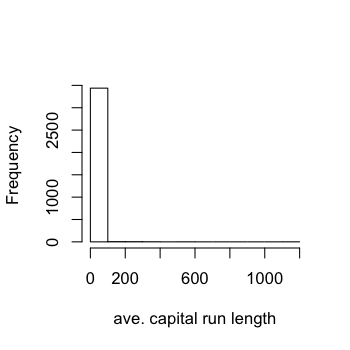

library(caret); library(kernlab); data(spam)
inTrain <- createDataPartition(y=spam$type,
p=0.75, list=FALSE)
training <- spam[inTrain,]
testing <- spam[-inTrain,]
hist(training$capitalAve,main="",xlab="ave. capital run length")
